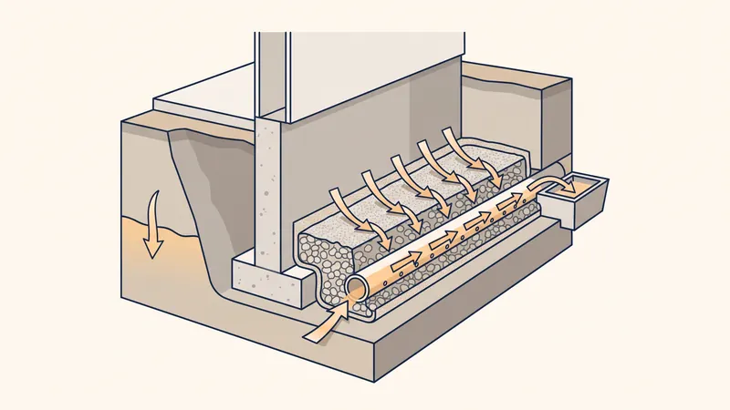

Drainage Terrain : Guide Complet, Prix & Techniques 2026
Le drainage de terrain est une opération essentielle pour protéger votre maison et votre jardin contre l'humidité excessive et les dégâts liés à l'eau. Dans les Bouches-du-Rhône, malgré le climat méditerranéen sec en été, les pluies d'automne et d'hiver peuvent être intenses et provoquer des ruissellements importants. Ce guide vous explique les différentes techniques de drainage, leurs coûts et quand faire appel à un professionnel.

Pourquoi drainer un terrain ?
Un terrain mal drainé entraîne de nombreux problèmes :
- Humidité dans les murs : remontées capillaires, moisissures, salpêtre. Les fondations baignant dans l'eau absorbent l'humidité par capillarité.
- Fissures structurelles : l'alternance gonflement/retrait des argiles fissure les fondations et les murs. C'est le premier sinistre en assurance construction dans la région PACA.
- Jardin inutilisable : pelouse détrempée, flaques stagnantes, terre boueuse rendant le jardin impraticable plusieurs mois par an.
- Dégradation des aménagements : les allées et terrasses posées sur un sol humide se déforment et se fissurent.
- Inondation du sous-sol : eau dans le vide sanitaire, la cave ou le garage enterré.

Les différents types de drainage
Le drain français (drainage périphérique)
Le drain français est le système de drainage le plus courant pour protéger les fondations d'une maison. Il consiste en une tranchée creusée au pied des fondations, remplie de gravier et contenant un tuyau de drainage perforé (drain agricole). L'eau s'infiltre à travers le gravier, pénètre dans le drain par ses perforations et est évacuée par gravité vers un exutoire (réseau pluvial, puisard, fossé).
La tranchée mesure typiquement 40 à 60 cm de largeur et 60 à 80 cm de profondeur. Le fond de la tranchée doit avoir une pente minimale de 3 mm par mètre (0,3 %) pour assurer l'écoulement de l'eau. Un géotextile enveloppe l'ensemble (gravier + drain) pour empêcher les particules fines du sol de colmater le système.
Le puisard (puits d'infiltration)
Le puisard est un puits rempli de gravier qui collecte les eaux de drainage et les infiltre dans le sol en profondeur. Il est utilisé comme exutoire lorsqu'il n'y a pas de réseau pluvial ni de fossé à proximité. Le puisard doit atteindre une couche de sol perméable pour fonctionner correctement.
Ses dimensions dépendent du volume d'eau à infiltrer et de la perméabilité du sol. Un puisard typique mesure 1 à 2 m de diamètre et 2 à 4 m de profondeur. Un test de percolation est recommandé pour vérifier la capacité d'absorption du sol.
Le drainage de surface (noue, rigole)
Le drainage de surface collecte les eaux de ruissellement avant qu'elles ne s'infiltrent dans le sol. Les noues sont des fossés peu profonds à pentes douces, souvent végétalisés, qui canalisent l'eau vers un point d'évacuation. Les rigoles en béton, pierre ou caniveau à grille collectent l'eau le long des allées et terrasses.
Ce type de drainage est complémentaire au drainage souterrain. Il est particulièrement utile pour les terrains en pente où le ruissellement est important et pour protéger les aménagements extérieurs.
Le drainage par tranchées filtrantes
Les tranchées filtrantes (ou tranchées drainantes) sont des tranchées peu profondes (30-50 cm) remplies de gravier, creusées dans le terrain à intervalles réguliers. Elles captent l'eau superficielle et la dirigent vers un collecteur ou un puisard. Cette technique est adaptée aux grandes surfaces (jardin, terrain de sport, parking).
Prix du drainage en 2026
| Type de drainage | Prix au ml | Estimation maison 100 m² |
|---|---|---|
| Drain français périphérique | 30 - 60 € | 2 000 - 4 000 € |
| Drainage avec cuvelage | 80 - 150 € | 5 000 - 10 000 € |
| Puisard | 800 - 2 000 € (l'unité) | - |
| Noue paysagère | 20 - 40 € | Variable |
| Caniveau à grille | 40 - 80 € | Variable |
Prix indicatifs TTC dans les Bouches-du-Rhône en 2026, fourniture et pose comprises.
Comment installer un drain français : les étapes
Étape 1 : Tracé et nivellement
Tracez le parcours du drain autour de la maison en respectant une distance de 50 cm à 1 m des fondations. Déterminez le point bas (exutoire) et le point haut. Utilisez un niveau laser pour garantir la pente régulière de 3 mm/m minimum.
Étape 2 : Creusement de la tranchée
La tranchée est creusée à la mini-pelle ou à la main. La profondeur doit atteindre le niveau bas des fondations (semelle de fondation). Le fond de la tranchée est réglé à la pente souhaitée.
Étape 3 : Pose du géotextile
Un géotextile non-tissé (grammage 200 g/m² minimum) tapisse le fond et les parois de la tranchée. Il dépasse des deux côtés pour pouvoir se refermer sur le gravier. Le géotextile empêche les particules fines du sol de colmater le gravier et le drain.
Étape 4 : Lit de gravier et pose du drain
Un lit de gravier (calibre 20/40 mm) de 10 cm est déposé au fond. Le drain PVC perforé (diamètre 100 à 200 mm) est posé sur ce lit de gravier, perforations vers le bas. Les raccords et coudes sont assemblés et collés. Des regards de visite sont installés à chaque angle pour permettre l'entretien.
Étape 5 : Remblaiement et fermeture
Le drain est recouvert de 30 cm de gravier 20/40. Le géotextile est replié sur le dessus pour fermer l'enveloppe filtrante. Le remblai final en terre végétale complète la tranchée. En surface, aucune trace visible ne subsiste.
Drainage et terrassement : une synergie indispensable
Le drainage est indissociable du terrassement. Chez STP Terrassement, nous intégrons systématiquement le drainage dans nos projets de terrassement à Aix-en-Provence. Qu'il s'agisse d'un terrain en pente, d'une construction neuve ou d'un mur de soutènement, le drainage est planifié dès la phase de conception.
Notre expérience dans les Bouches-du-Rhône nous permet de connaître les spécificités des sols locaux : sols argileux de la plaine de l'Arc, calcaires fissurés du massif de la Sainte-Victoire, alluvions de la Durance. Chaque type de sol nécessite une approche de drainage adaptée.
Problème d'humidité ou de drainage ?
STP Terrassement diagnostique votre problème et propose la solution de drainage adaptée. Devis gratuit sous 24h.